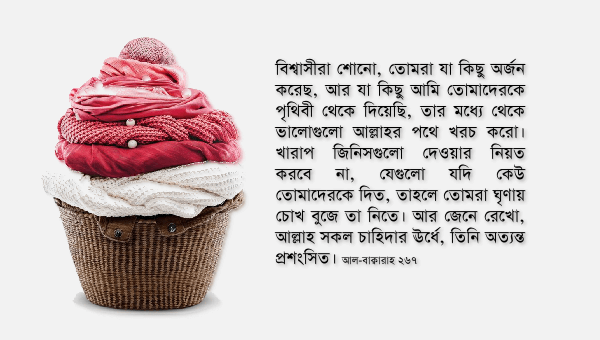

আমরা যখন দান করার চিন্তা করি, তখন আলমারিতে খুঁজে দেখি কোন জামাকাপড়গুলো আর পরার যোগ্য নেই, কোন আসবাবপত্রগুলো মানুষের সামনে রাখলে আর মান সম্মান থাকছে না, ফ্রিজে কোন খাবারগুলো খেলে বাথরুম থেকে আর বের না হওয়ার সম্ভাবনা আছে ইত্যাদি। গরিবদেরকে খাওয়াতে গেলে হাড্ডি-চর্বি ভর্তি মাংসগুলো দেই, যেগুলো নিজে খাওয়ার কথা চিন্তা করব না, আর নিজের জন্য ভালো মাংসগুলো রেখে দিই। গরিব প্রতিবেশী, কর্মচারীদেরকে তিনদিনের বাসি তরকারিগুলো সুন্দর প্লেটে করে পাঠিয়ে দেই। এভাবে দান করে মনে করি বিরাট সওয়াবের কাজ করে ফেলেছি, আল্লাহ تعالى নিশ্চয়ই এখন আমার উপরে বড়ই খুশি।
বিশ্বাসীরা শোনো, তোমরা যা কিছু অর্জন করেছ, আর যা কিছু আমি তোমাদেরকে পৃথিবী থেকে দিয়েছি, তার মধ্যে থেকে ভালোগুলো আল্লাহর পথে খরচ করো। খারাপ জিনিসগুলো দেওয়ার নিয়ত করবে না, যেগুলো যদি কেউ তোমাদেরকে দিত, তাহলে তোমরা ঘৃণায় চোখ বুজে তা নিতে। আর জেনে রেখো, আল্লাহ সকল চাহিদার ঊর্ধ্বে, তিনি অত্যন্ত প্রশংসিত। [আল-বাক্বারাহ ২৬৭]
আল্লাহ تعالى পরিষ্কার করে বলে দিয়েছেন যে, তিনি تعالى এধরনের দান গ্রহণ করবেন না। দান করার সময় যেন আমরা নিজেদেরকে গ্রহীতার জায়গায় চিন্তা করি। আমি গরিব, অভাবী হলে কি সেই দান খুশি মনে নিতাম? যদি আমি নিজে সেই দান না নিই, তাহলে কীভাবে আমি সেটা অন্যকে দেওয়ার কথা চিন্তা করি? আমার কি কোনো বিবেক নেই? সূরা আলে ইমরানে এক ভয়ংকর আয়াত আছে—“তুমি কোনোদিনও পুণ্য অর্জন করবে না, যতক্ষণ না তুমি সেটা দান করো, যা তুমি নিজে ভালোবাসো।” [৯২]
অনেক সময় আমরা নিজেদেরকে বোঝাই যে, অভাবীরা এইসব ছেড়া, ভাঙা, বাসি জিনিস পেলেই খুশি হয়। ওদের কি আর আমাদের মতো এত চাহিদা আছে নাকি? আল্লাহ تعالى আমাদেরকে বলেননি খুঁজে দেখতে যে, ওরা খুশি হবে কিনা। তিনি تعالى এক কঠিন স্ট্যান্ডার্ড দিয়ে দিয়েছেন: আমি নিজে খুশি হবো কিনা, যদি আমাকে কেউ সেই সব জিনিস দান করত।
আমাদেরকে বুঝতে হবে দানের উদ্দেশ্য কী? উদ্দেশ্য হচ্ছে ধনী-গরিবের মধ্যে পার্থক্য কমানো। আপনি দান করার আগে এলাকার গরিব মানুষগুলো ছেড়া কাপড় পরে ঘুরে বেড়াতো, আর আপনি দান করার পড়ে সেই মানুষগুলো আপনার দেওয়া ছেড়া কাপড় পরে ঘুরে বেড়ায়—এতে তো কোনো উন্নতি হলো না। বরং তারা যদি আপনি নিজে যা পরেন, সেই একই কাপড় পরে ঘুরে বেড়ায়, তাহলেই আপনার এবং তাদের মধ্যে পার্থক্য কমবে এবং দানের উদ্দেশ্য অর্জন হবে। সমাজের উন্নতি হবে, গরিব মানুষগুলোর অবস্থার পরিবর্তন হবে, চুরি-অন্যায় কমবে, মানুষের মধ্যে সৌহার্দ বাড়বে, গরিব-অভাবী মানুষগুলো আর নিজেদেরকে সমাজের বঞ্চিত, ঘৃণিত মানুষ মনে করবে না, তাদের সাথে দুর্ব্যবহার, অন্যায়, তুচ্ছ তাচ্ছিল্য কমবে।

তোমরা যা কিছু অর্জন করেছ, আর যা কিছু আমি তোমাদেরকে পৃথিবী থেকে দিয়েছি
নিজেদের অর্জন বলতে ব্যবসা-বাণিজ্য করে অর্জন করা সম্পদ, মেধার ব্যবহার করে অর্জন করা যোগ্যতা, সম্মান, ক্ষমতা, কর্তৃত্ব এই সব বোঝায়। আর আমাদের জন্য প্রয়োজনীয় প্রায় সবকিছুই আল্লাহ تعالى আমাদেরকে পৃথিবী থেকে বের করে দিয়েছেন, যেমন শস্য, ফলমূল, তেল, গ্যাস, সোনা, রুপা, সিলিকন, লোহা, এন্টিবায়োটিক ইত্যাদি সবকিছুই কোনো না কোনোভাবে পৃথিবী থেকে বের হয়েছে। এগুলো সবই আল্লাহর تعالى পথে খরচ করতে হবে। আল্লাহ تعالى আমাদেরকে কখনও শুধু সম্পদ দান করতে বলেন না। বরং তিনি تعالى বলেন, তাঁর পথে খরচ করতে। আমরা যা কিছুই অর্জন করি, সেটা নিজের বুদ্ধি খরচ করে হোক, আর পৃথিবী থেকে আহরণ করে হোক, তার সবকিছুর ভালো অংশ আমরা আল্লাহর تعالى পথে খরচ করবো।[১১][১২][১৪]
পরীক্ষায় ভালো ফলাফলের জন্য, বড় চাকরি পাওয়ার জন্য আমরা মাথার ঘাম পায়ে ফেলে যথাসাধ্য চেষ্টা করি। অথচ আরবি শেখা, কুর‘আন শেখার সময় যেটুকু না করলেই নয়, সেটুকুই করি। প্রমোশনের জন্য, ব্যবসার প্রসারের জন্য আমরা কাজের সময়ের বাইরে বাড়তি কাজ করি, ছুটি বাতিল করে দিই, দাওয়াতে যাওয়া ছেড়ে দিই। কিন্তু আল্লাহর تعالى পথে কিছু অর্জন করার জন্য এই পর্যায়ের চেষ্টা করার ইচ্ছা আমাদের থাকে না। একটার পর একটা সার্টিফিকেট, ডিগ্রি অর্জন করার জন্য রাতজেগে পড়ি, পরিবারের সদস্যদের চাওয়া পাওয়া উপেক্ষা করি, সামাজিক দাবি ছেড়ে দিই। কিন্তু আল্লাহর تعالى পথে কিছু করতে গিয়ে কোনো ধরনের আত্মত্যাগ করার, আরাম, বিনোদন, আভিজাত্য ছেড়ে দিয়ে একটু কষ্ট করার ইচ্ছা থাকে না।
আমাদের মধ্যে অনেকেই আছেন যারা বড় ডিজাইনার, প্রোগ্রামার, বা ইঞ্জিনিয়ার। তারা যখন অফিসের জন্য ডিজাইন করেন, বিদেশি ক্লায়েন্টের জন্য প্রোগ্রাম লেখেন, ব্যাঙ্কের জন্য বিল্ডিং বানান, তখন সব দিক থেকে চেষ্টা করেন কাজের মান সবচেয়ে উন্নত রাখতে। কিন্তু তারাই যখন কোনো ইসলামি কাজের জন্য ডিজাইন করেন, বা ইসলামি প্রোগ্রাম বানান, বা মসজিদ নির্মাণ করেন, তাদের কাজ হয়ে যায় একেবারেই দায়সারা কাজ। কোনো মতে কাজ চলার মত কিছু একটা দাঁড়ালেই হলো। এইসব কাজে বাড়তি খাটুনি করার কোনো দরকার আছে নাকি? —আমরা ভুলে যাই এইসব কাজের ক্লায়েন্ট আসলে কে।
আমাদেরকে এই মানসিকতা থেকে বেড়িয়ে আসতে হবে। নিজেদেরকে গ্রহীতা বা ব্যবহারকারীর জায়গায় বসিয়ে চিন্তা করে দেখতে হবে, যেই মানের কাজ করলাম, সেই মান আমি নিজে গ্রহণ করব কিনা, যদি কেউ সেই কাজ আমার জন্য করে দিত? আল্লাহর تعالى পথে করা কাজগুলো হবে সাধারণ মানের, অথচ মানুষের জন্য, নিজের লাভের জন্য করা কাজগুলো হবে উঁচু মানের—এই ডাবল স্ট্যান্ডার্ড রেখে কীভাবে আমি নিজেকে একজন ভালো মুসলিম বলে দাবি করি?
আর জেনে রেখো, আল্লাহ সকল চাহিদার ঊর্ধ্বে, তিনি অত্যন্ত প্রশংসিত
আমরা কিছু দান করি, আর না করি, আল্লাহর تعالى তাতে কিছুই যায় আসে না। তিনি تعالى হচ্ছেন গ্বনীই—যিনি এতই ধনী যে, তাঁর কোনো অভাব বোধ নেই।[৫]
ধরুন আপনি একজন ধনকুবেরের ছেলের বিয়েতে দাওয়াত পেয়েছেন। আপনি কয়েক শ টাকার একটা ঘড়ি উপহার নিয়ে গেছেন। গিয়ে দেখলেন অন্য অতিথিরা লক্ষ লক্ষ টাকার বিশাল সব উপহার রিসিপশনে জমা দিচ্ছে। তাদের আলিশান প্রাসাদ, বিয়ের বিশাল আয়োজন, ছেলের হাতে কোটি টাকার সোনা-হিরার ঘড়ি, দারোয়ানের গায়ে আপনার থেকেও বেশি দামি কাপড়—এইসব দেখে আপনার চক্ষু চড়কগাছ। আপনি রিসিপশনে দাঁড়িয়ে লজ্জায় ছোট হয়ে ভাবছেন: আপনার কয়েক শ টাকার ঘড়িটা দেবেন, নাকি চুপচাপ কেটে পড়বেন।
সৃষ্টিজগতের সব সম্পত্তির মালিক আল্লাহ تعالى। তাঁর দেওয়া ভিক্ষা দিয়ে আমরা সবাই চলি। কিয়ামতের দিন যখন তাঁর تعالى সুবিশাল সম্পদ, প্রচণ্ড ক্ষমতা, দুর্দান্ত প্রতাপ আমরা নিজের চোখে দেখতে পারব, দুনিয়াতে তাঁর تعالى সম্পর্কে কী ধারণা করেছিলাম, আর আসলে তিনি تعالى কত বড় — তখন তা হাড়ে হাড়ে উপলব্ধি করব। তারপর যখন দেখবো অন্য বান্দারা কী বিশাল সব অর্জন নিয়ে এসেছেন, আর আমি কত নগণ্য কিছু অর্জন নিয়ে এসেছি, তখন দুঃখে কপাল চাপড়াতে থাকবো।
সূত্র
[১] বাইয়িনাহ এর কু’রআনের তাফসীর। [২] ম্যাসেজ অফ দা কু’রআন — মুহাম্মাদ আসাদ। [৩] তাফহিমুল কু’রআন — মাওলানা মাওদুদি। [৪] মা’রিফুল কু’রআন — মুফতি শাফি উসমানী। [৫] মুহাম্মাদ মোহার আলি — A Word for Word Meaning of The Quran [৬] সৈয়দ কুতব — In the Shade of the Quran [৭] তাদাব্বুরে কু’রআন – আমিন আহসান ইসলাহি। [৮] তাফসিরে তাওযীহুল কু’রআন — মুফতি তাক্বি উসমানী। [৯] বায়ান আল কু’রআন — ড: ইসরার আহমেদ। [১০] তাফসীর উল কু’রআন — মাওলানা আব্দুল মাজিদ দারিয়াবাদি [১১] কু’রআন তাফসীর — আব্দুর রাহিম আস-সারানবি [১২] আত-তাবারি-এর তাফসীরের অনুবাদ। [১৩] তাফসির ইবন আব্বাস। [১৪] তাফসির আল কুরতুবি। [১৫] তাফসির আল জালালাইন। [১৬] লুঘাতুল কুরআন — গুলাম আহমেদ পারভেজ। [১৭] তাফসীর আহসানুল বায়ান — ইসলামিক সেন্টার, আল-মাজমাআহ, সউদি আরব [১৮] কু’রআনুল কারীম – বাংলা অনুবাদ ও সংক্ষিপ্ত তাফসীর — বাদশাহ ফাহাদ কু’রআন মুদ্রণ কমপ্লেক্স